很多人记得《你的名字。》，是因为身体互换的喜剧，是因为彗星，或者是因为 RADWIMPS 在某个转场里突然响起的鼓点。可是在第三遍、第四遍重看之后，最先在脑海里浮上来的，往往既不是情节，也不是台词，而是光——某一个具体时刻的光：清晨从拉门缝里漏进来的白，东京高楼玻璃上反射的正午，山顶上那段桃色和藤色叠在一起的黄昏，以及彗星把夜空划开时，冷蓝里那一点点暖。
新海诚的电影常被概括为“画面好看”。这句话没错，却太轻了。在《你的名字。》里，光不只是好看，它几乎就是叙事的骨架：两个人只在早晨醒来时发现自己变成了对方；只有在黄昏那短短的几分钟里，相隔三年的他们才能看见彼此；真相在夜里揭晓；而最终的重逢，又被安排在另一个早晨。整部电影像是被折叠进了一天之中。
这篇长文就打算顺着这一天读下去：朝、昼、黄昏、夜，然后再一次的朝。每一章开头会有一整屏的画面，你可以停下来，移动鼠标或是轻轻滚动，看看那些被一层层画出来的前景、中景与远景如何彼此错开11本站的大图使用了单目深度估计得到的深度图，在浏览器里实时做视差遮挡。它不是原作的分层素材，只是一种“读画”的方式：让你意识到新海诚的背景本来就是按空气的厚度来画的。。你也许还会注意到，这一页的纸色并不固定——它会随着章节，从清晨的微冷走到黄昏的玫瑰色，再沉进夜里。那些颜色都不是凭空调出来的，而是从电影画面里一帧一帧取出来的。
那么，从早晨开始。
电影里的早晨总是从同一个动作开始：睁眼，愣住，低头看自己的身体。三叶在榻榻米上摸到不属于自己的胸口，泷在东京的公寓里醒来时眼角挂着泪，却说不出是为了什么。这个“醒来”的镜头前后出现了许多次，节奏几乎一致——先是光，然后才是人。
fig. 01醒来的第一秒：镜头先给房间里的晨光，然后才给到人。
如果把这些早晨的画面放在一起取色，会得到一组很“轻”的颜色：大约四分之一的面积落在一种极淡的天青上（接近 #c3ddf3），其余是被曝得发白的纸色与浅灰。几乎没有真正的黑。新海诚的清晨不是用暗部来塑造的，而是用过曝——高光溢出窗框，边缘被光吃掉，空气里像是悬着一层雾。
这种画法有它的道理。早晨是一天里最不可靠的时刻：梦的余温还在，现实的轮廓却还没完全对焦。日语里有一个古老的词形容黎明的微光，叫“かはたれどき”，写作彼は誰時——天色太暗，看不清来人是谁，只好问一句：那是谁22与之对应的黄昏叫“たそかれどき”，写作“誰そ彼時”，后来演变为“黄昏（たそがれ）”。一个在清晨，一个在傍晚，问的是同一个问题。？
お前は誰だ— 笔记本上的字
电影把这个问题写在了纸上。泷第一次在三叶的身体里度过一天之后，三叶醒来，在自己的笔记本上看到一行陌生的、男孩子的字迹，问她：你是谁？
fig. 02一句问话，被写在第二天早晨才会读到的地方。
这里有一个很容易被喜剧节奏掩盖的细节：互换总是在睡眠里发生，又在睡眠里结束，于是每一次“醒来”，都同时是一次交接和一次遗忘。两个人很快学会了在手机里写日记、在手臂上留字，用文字去对抗醒来时迅速褪色的梦。他们约法三章，抱怨对方乱花钱，偷偷替对方经营人际关系——整部电影最轻快的段落都发生在这些早晨之后。
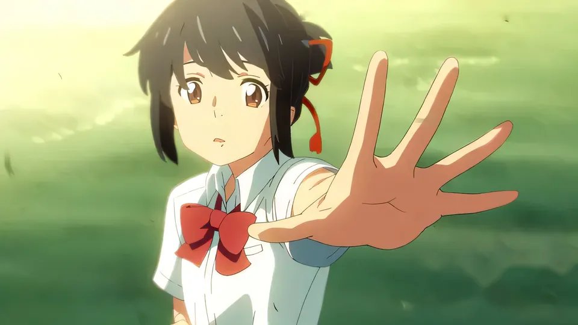
三叶
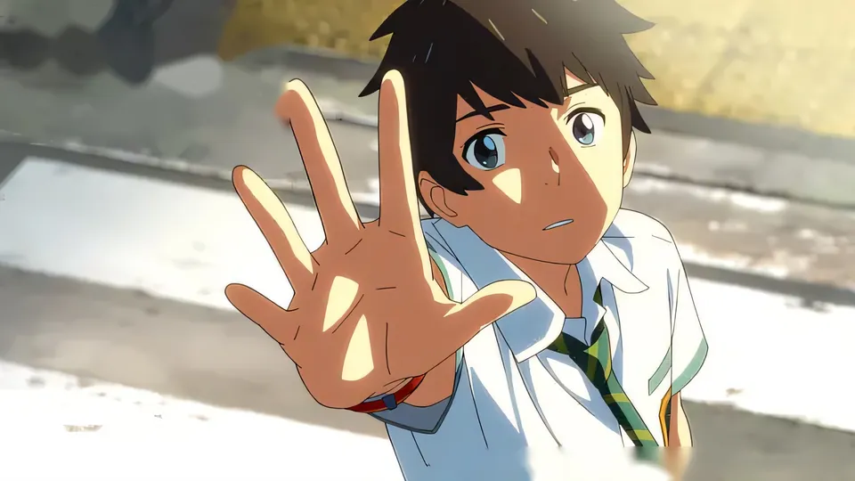
瀧
fig. 03两只伸向镜头的手，构图几乎镜像。
但喜剧之下，早晨的光一直在提示另一件事：醒来是会忘的。三叶的外婆一叶说过，梦终究会醒，醒来就会消失。电影几乎每一个早晨的段落都在重复这个机制，只是起初我们笑着看过去，没有当真。等到后来泷怎么也想不起那个名字的时候，我们才意识到，那些明亮得近乎刺眼的清晨，从一开始就在预演失去。
fig. 04“三叶版”的泷去了一趟东京的咖啡馆。暖色的室内光，是早晨之后的世界。
所以我愿意把第一章叫作“醒来即是遗忘的开始”。早晨的光太亮了，亮到看不清影子；而看不清影子的地方，也就藏不住记忆。
正午是一天里最缺乏诗意的时刻：光从头顶直射，影子缩到脚下，一切都清清楚楚。可也正是在这样的光里，《你的名字。》画出了它最“具体”的部分——两座城。
一座是东京。在很多以乡愁为主题的作品里，大城市常常被画得冷漠、拥挤、灰扑扑的，像是乡村的反面。新海诚的东京却截然不同：玻璃幕墙把天空复制了一遍又一遍，电车的车窗里映着整条街，人行天桥的栏杆被阳光镀上一道细细的亮边。这座城市被画得和山间小镇一样深情。
fig. 05新宿。每一块招牌、每一根电线都被认真地画了出来。
另一座是糸守。湖是圆的，镇子沿着湖岸展开，山腰上有神社，石阶一路向上，红色的鸟居站在杉树之间33糸守町是虚构的地名，设定在岐阜县飞驒地区。一般认为湖的形态参考了长野县的诹访湖，镇上的许多细节则取材于飞驒古川一带。。和东京相比，糸守的颜色更“厚”：杉树的暗绿、鸟居的朱红、湖面反射的青，彼此之间的对比更强，空气也更透明。
fig. 06宫水神社。前景的石灯笼、中景的鸟居、远处的杉林——典型的三层纵深。
电影最妙的地方在于，它并不让这两座城彼此对立。它不说“乡下纯朴、城市冷漠”，也不说“城市自由、乡下闭塞”；三叶确实在祭典上被同学取笑，确实发誓下辈子要做东京的帅哥，可是泷来到糸守，也一样被那片湖和山打动。两座城是对照，而不是对立。
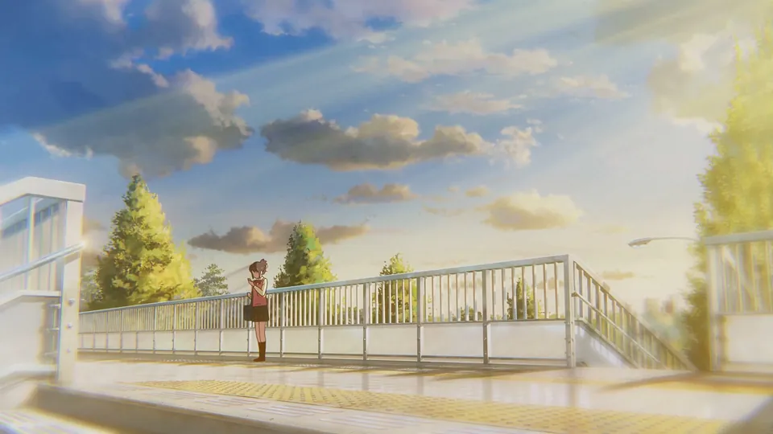
糸守 · 三叶
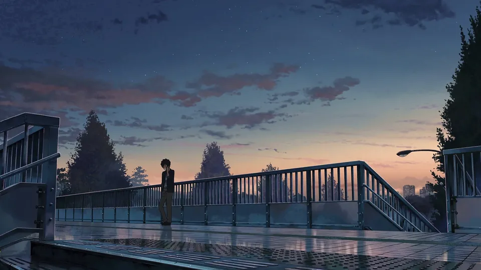
東京 · 瀧
fig. 07同样的栏杆，同样远远站着的一个人。不同的城市，不同的年份。
连接这两座城的，是新海诚几乎偏执地画了一辈子的那些东西：电线、铁轨、信号灯、电车门。在很多导演那里，这些只是背景里的“城市噪音”；在他这里，它们像是血管。电线把一根根电线杆连起来，铁轨把一个个车站连起来，而电车，是两个陌生人最有可能擦肩而过的地方。
城市里的每一根电线，
都在默默地说着“连接”这个词。— 关于新海诚的背景
fig. 08站台。这部电影里，几乎所有重要的相遇与错过，都与电车有关。
说到电车，就不得不提那一场很多人第一遍并没有看懂的戏。互换突然中断后，三叶独自一人坐车去了东京，想见泷一面。她在拥挤的车厢里认出了他，他却完全不认识她——因为对那时的泷来说，他还根本没有和她交换过身体44两人的时间相差三年：泷生活在 2016 年，三叶生活在 2013 年。三叶去东京的那一天，泷还是个初中生。。
fig. 09她认识他，他不认识她。他被人流推下了车，她在车门关上前解下头上的组纽，抛给了他。
正午的光不会撒谎，它把一切照得清清楚楚，却偏偏照不到“时间”。两座城在同一片天空下，却并不在同一年里。这件事要等到黄昏，才会被看见。
在糸守高中的古文课上，老师在黑板上写下“誰そ彼”三个字，解释说这就是“黄昏”的语源：天色将暗，人的轮廓变得模糊，迎面走来的人看不清脸，只好问一句“你是谁”。接着她顺口提起，糸守这一带的老人家不这么说，他们管这个时刻叫“カタワレ時”55“片割れ”意为一分为二后的其中一片，也常被用来指“另一半”。“片割れ時”是电影为糸守设定的方言说法，也是本站名字的由来。。
カタワレ時— 糸守的方言
这一段课堂戏在电影前半部分一闪而过，听上去像是为了让观众学一个漂亮的词。等到电影过了大半，我们才发现，这其实是整个故事唯一的“规则”：只有在黄昏，两个不同时间里的人才能相见。
那是泷在三年后找到御神体所在的山顶，喝下三叶亲手供奉的口嚼酒，再一次进入三叶的身体；而另一边，醒来的三叶发现自己正在泷的身体里，站在同一座山顶上——只不过是三年后的山顶。两个人在同一个地点、不同的年份里，互相寻找，呼喊对方的名字。
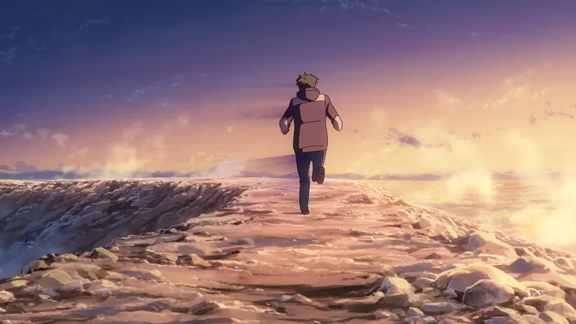
三叶（在瀧的身体里）
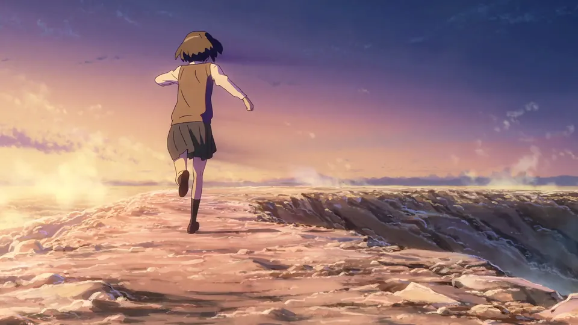
瀧（在三叶的身体里）
fig. 10同一条火山口的边缘，两个人向着相反的方向跑。
他们擦肩而过，感觉到了对方，却看不见。这是电影里最揪心的几秒：画面上明明是同一块岩石、同一片云海，两个人的位置甚至几乎重叠，可他们之间隔着整整三年。直到太阳沉到云海之下的那一刻——
fig. 11一道光把画面分成两半。左边是一个时间，右边是另一个时间。
我曾经把这几分钟里的画面逐帧取色。它们和清晨、正午的色卡完全不同：没有哪一种颜色占据绝对的主导，桃色、玫瑰色、藤紫与靛蓝几乎平分秋色。
桃#efc39c
玫瑰#dab2b7
夕#b87e7b
藤#9e84a6
鼠#6c5f6e
靛#48517f
fig. 12山顶黄昏段落的取色（Lab 空间 k-means，宽度即面积占比）。白天的暖与夜晚的冷，在同一片天空里各占一半。
这正是黄昏在视觉上的定义：天空同时容纳着白天和夜晚的颜色。西边还是暖的，东边已经冷了；云的受光面是桃色，背光面已是靛蓝。新海诚把“两个时间重叠”这件抽象的事，交给了一片具体的天空去完成。我们不需要任何解释，只要抬头看看那片天，就知道此刻是一个“既是又不是”的时刻。
fig. 13“片割れ時”。两个人终于以自己的身体，站在了彼此面前。
相见之后的那几分钟，电影反而放慢了。泷把手腕上那根戴了三年的组纽还给她——那是三年前，在东京的电车上，一个他当时并不认识的女孩塞给他的。三叶把它重新系在头上。两个人说话，打闹，脸红，像所有第一次见面的高中生一样笨拙。
fig. 14一根绳子，从 2013 年走到 2016 年，又在这里回到 2013 年。
然后泷说，为了醒来以后不会忘记，我们把名字写下来吧。他在她手心里写了字，把笔递给她。她刚刚落下第一笔——
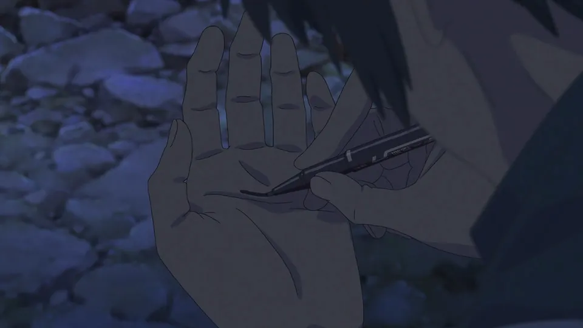
手心
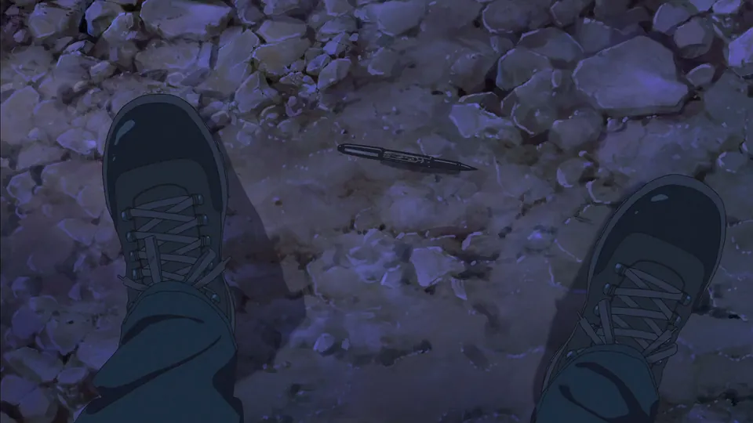
落下的笔
fig. 15黄昏结束了。手心里只有一道没写完的笔画，地上只有一支笔。
黄昏结束了。光一熄灭，“既是又不是”的时刻就关上了门。这场戏没有任何特效，没有消失的光点，也没有煽情的配乐，只是一支笔掉在地上的声音。我一直觉得，这是整部电影最残忍、也最节制的一个镜头。
很久以后三叶才会看到，泷写在她手心里的，并不是他的名字。
如果说黄昏是这部电影的心脏，那么夜晚就是它的真相。
彗星第一次出现时，没有人觉得它可怕。它拖着长长的尾巴，在夜空里缓慢地移动，新闻里说这是千年一遇的天文奇观66片中的彗星名为“提亚马特”（ティアマト），公转周期约一千二百年。它的碎片在糸守的秋祭之夜坠落。。东京的泷在天台上抬头看，糸守的三叶穿着浴衣在山坡上抬头看。画面美得像节日的烟火。
fig. 16彗星一分为二。漂亮的那一半继续飞走，另一半落向湖边的小镇。
这部电影的夜景，取色结果非常极端：将近四分之一的画面落在一种近乎黑的深蓝里（#061535），其余几乎都是蓝——群青、钴蓝、灰蓝。而唯一的暖色，是彗核附近那一点点带粉的米白（#e1bfb2），只占画面的百分之一点七。
夜#061535
群青#021666
绀#244072
钴#165ad3
彗尾#5279bc
#e1bfb2
fig. 17彗星段落的取色。最右边那条细细的暖色就是彗核——1.7%，却是整个画面里最先被看见的东西。
这个比例本身就是一种叙事。在一片冷色里，眼睛会本能地去找那一点暖；所以我们和片中的所有人一样，被彗星吸引，盯着它看，觉得它美。没有人会在第一次看见它时想到“灾难”。电影让我们和糸守的人们站在同一个位置上——仰望，赞叹，毫无防备。
然后是那个转折。互换停止了。泷凭着记忆，把糸守的风景一张张画下来，带着这些画去飞驒寻找那个小镇。
fig. 18深夜，台灯，一张张画。记忆在褪色，他只能用手把它留住。
有人认出了画里的地方：那是糸守，三年前被彗星碎片毁掉的镇子。
fig. 19被毁灭的时间线。原本的圆湖旁边，多出了一个新的、更圆的湖。
这一刻，前面所有的“轻”都变成了“重”。那些早晨的笑闹、那些手机里的日记、那些被他用三叶的身体去过的教室和神社——都发生在一个已经不存在的地方，和一个已经不在了的人身上。手机里的日记一行一行地消失，连他自己都开始想不起那个名字。
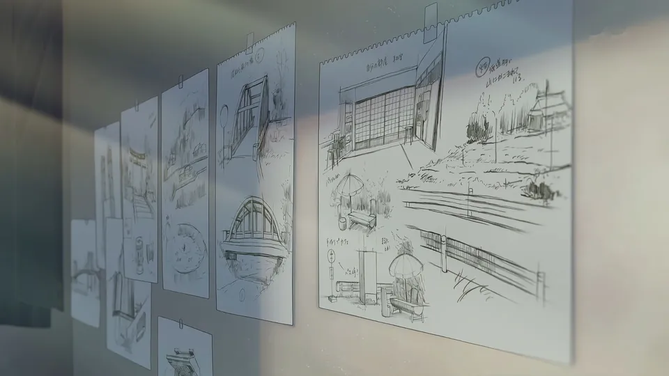
画
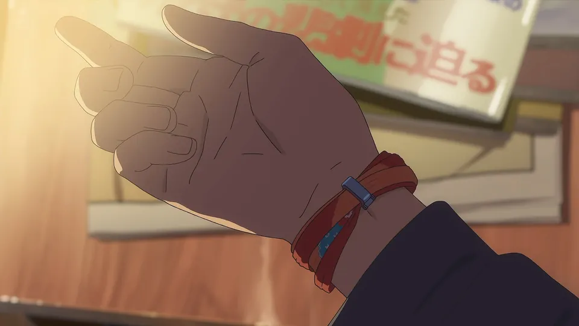
绳
fig. 20两样东西替他记着：手画下的风景，和手腕上那根不知来历的绳子。
结びmusubi
电影在这里拿出了它的形而上学。还记得三叶的外婆一叶在去御神体的山路上说过的话吗？她说这片土地的守护神叫作“结び”。把线搓在一起是结び，人与人相连是结び，时间的流动也是结び。线会缠绕、会打结、会松开，有时又会重新连上——那就是时间本身。
这段话在第一次看的时候很像是“民俗知识小课堂”。可是等到夜幕降临，你会发现它几乎是整部电影的操作说明：组纽是物质化了的时间，它从三叶的头上到了泷的手腕，在里面待了三年，又在黄昏的山顶回到她手里。口嚼酒是三叶的“半身”，被留在山顶的御神体里77口嚼酒是一种古老的酿酒方式：将米饭嚼过后吐出、静置发酵。片中三叶与妹妹四叶在祭典上制作口嚼酒，供奉于山顶火山口中的御神体。，等着三年后的某个人来喝下它。
fig. 21御神体所在的火山口。千年前，这里也曾落下过一颗星。
夜晚在这部电影里是揭示的时刻，却不是绝望的时刻。正因为看清了真相，泷才有理由回到山顶；正因为三叶在黄昏里见到了他，她才有勇气在夜里冲进镇长办公室、骑车穿过黑暗的山路、摔倒之后又爬起来。彗星在头顶划过，而地面上有人在奔跑。
摔倒的那一刻，她摊开手心，想看看他写下的名字。那里写着的，是另外三个字。
V · Tokyo, some years later
04:38
夜还没有结束。
有些名字，醒来就会忘记。
可是光，会再来一次。
糸守的人们得救了。改写之后的新闻里说，彗星碎片坠落当晚，镇上恰好举行了避难演习，绝大多数居民因此幸免88彗星碎片坠落于 2013 年 10 月 4 日的秋祭之夜。改写后的时间线里，这场灾难被报道为“奇迹般”的幸存。。可是代价是：两个人都忘了。
fig. 22改写后的世界，只剩下杂志上的一则报道。
电影最后的段落发生在几年之后的东京。泷在找工作，三叶已经搬到了这座城市。他们都长大了，都穿着通勤的衣服，都有一个说不清的习惯：总觉得在找一个人，却不知道是谁。早晨醒来时，眼角偶尔是湿的。
新海诚在这里又一次使用了早晨。不过这一次的早晨，和第一章的早晨不一样了。第一章的早晨是遗忘的开始；而这里的早晨，是遗忘之后仍然留下来的东西——一种朝向某个方向的、没有名字的牵挂。
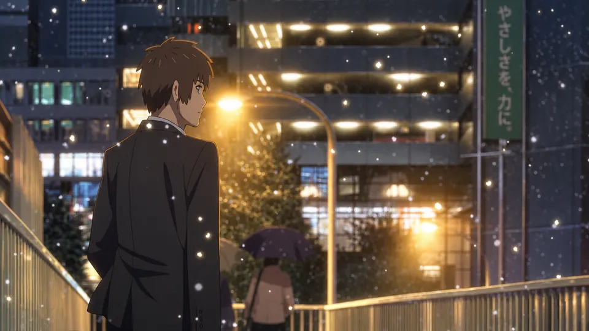
瀧
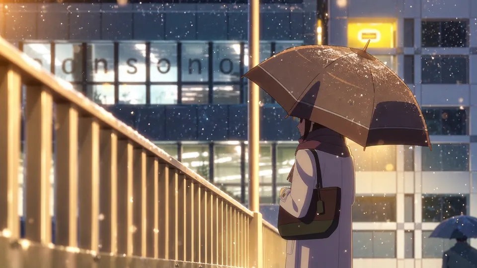
三叶
fig. 23在不同的天桥上，同时回头。成年后的段落里，两人依旧是一组“对照”。
然后是那个早晨，两列电车并排行驶。车窗对着车窗，他们看见了彼此。车门一开，两个人同时冲下车，在陌生的街道里奔跑，像是在重演山顶上的那场寻找——只不过这一次，他们不再隔着三年。
fig. 24他的视角：人群里，一个系着红色发绳的背影。
最后他们在一段石阶上相遇。他往上走，她往下走。两个人擦肩而过，谁都没有停下来。走过去几步之后，他回过头——
fig. 25须贺神社前的石阶9。一个在上，一个在下，同时回头。
9这段石阶位于东京新宿区四谷的须贺神社，电影上映后成为许多观众专程前往的地方。
fig. 26早晨的光，又一次从侧面照过来。
他问：我们是不是在哪里见过？她几乎在同一时刻也开口了。然后两个人同时问出了那一句——你的名字是？
电影就停在这里。它没有让我们听到答案。
一个句号the full stop
这部电影的片名是《君の名は。》，末尾是一个句号，而不是问号。这个标点常常被人拿来讨论。我更愿意把它读成一种未完成：“你的名字是——”，后面本该接上一个名字，却被一个句号轻轻截住了。它像是一句在醒来之前没来得及说完的话。
可是读完这一天之后，我又觉得这个句号也许并不遗憾。名字总会被忘记，就像梦总会在早晨褪去。但电影用了整整一天去证明，有些东西并不依赖名字而存在：清晨的眼泪，正午的电线，黄昏那片同时属于两个时间的天空，夜里那一点点暖色的彗核，还有一根从一个人的头发上，走到另一个人手腕上的绳子。
它们都被光记住了。所以当光再一次来临，两个人在石阶上回头，问对方的名字——这个问题本身，就已经是答案了。
fin.君の名は。
— 片刻 · 写于彗星坠落之日的十三年后